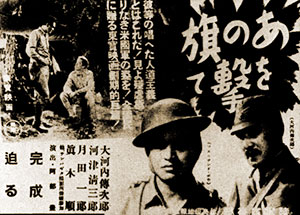

|
j
a v a s c r i p t |
August 18, 1943
Had a checkup today and chatted with the doctor while waiting for a bus. He told me cholera cases now number ninety, most of them Japanese in Intramuros, and there's a boat in the Bay with sailors that aren't allowed to land. The talk drifted to food and I mentioned that with one million inhabitants in the city we could see a panic someday. "Oh don't worry," said the doctor, "I've been told that 90% are on our side." "What 90% are on our side?" "The Constabulary." . . . . We are on the verge of a hyperinflation that the Japanese don't want to face. A box of matches now costs 80c (2c pre-war); a box of crackers, P24 (60c) — the empty tin alone is worth P2. A can of condensed milk costs P9 (11c); Johnny Walker, P125 (P4) — the empty bottle alone is worth almost P3; and a bicycle tire is P150 (up from P3). Military currency is trading at 2:1 against real currency. P5 military will get you one dollar — and a heap of trouble if someone reports on you. The Japanese will pay you up to P3 per kilo of scrap iron, which explains why the Sotelo's gate was stolen. It must've weighed 200 to 300 pounds so the police were reluctant to believe it, but Roxas' gate was even bigger and it's gone too. In the provinces sugar is almost impossible to buy, and the quality of rice is so poor that discontent is growing. The people there have taken to bartering. Tribune: "Three Enemy Warships, Four Transports Sunk" — begins the usual exaggerated propaganda on the Solomons. But the news has it that we bypassed Kolambangara and landed on the next island, Vella Lavella, finding only 300 Japanese there.

Down with the Stars & Stripes Poster
a.k.a. Ano hata wo ute [Shoot that flag] a.k.a. Liwayway ng Kalayaan [Dawn of Freedom] Toho began filming "Down with the Stars and Stripes" in Plaza Moraga today. With its 870 extras and top Filipino stars such as Fernando Poe, Angel Esmeralda, and Leopoldo Salcedo, I predict the film will be received with great applause — as a comedy. The Japanese are said to be searching for an envoy sent by Confesor, an American Lt. Colonel posing as a Catholic priest. They've raided Santa Mesa and Malate Churches without success. ...ooOoo... |
|
|
|
|